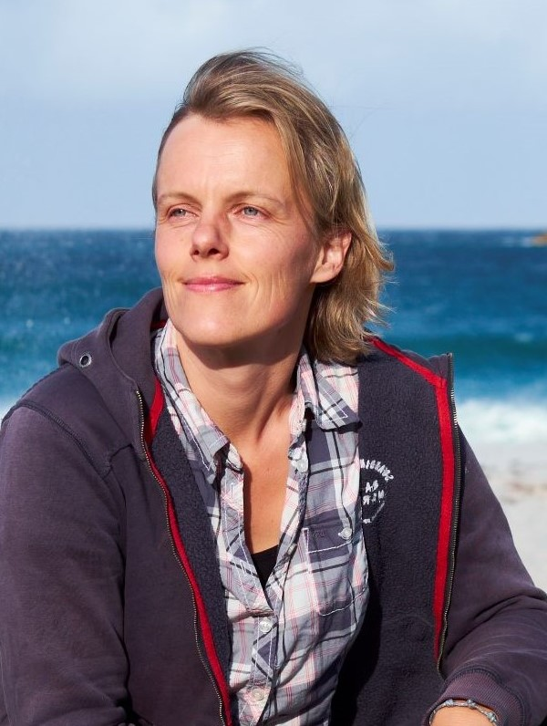
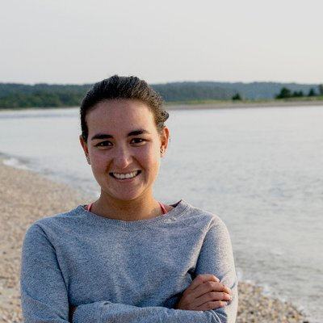
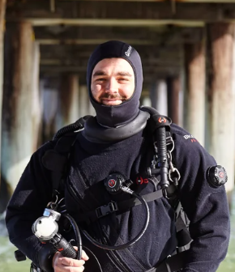
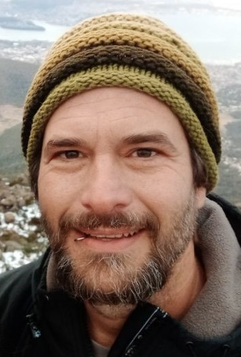
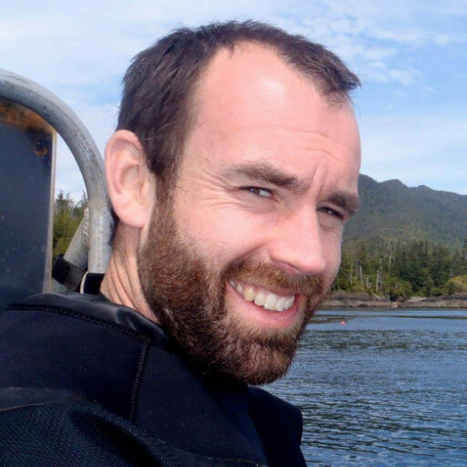
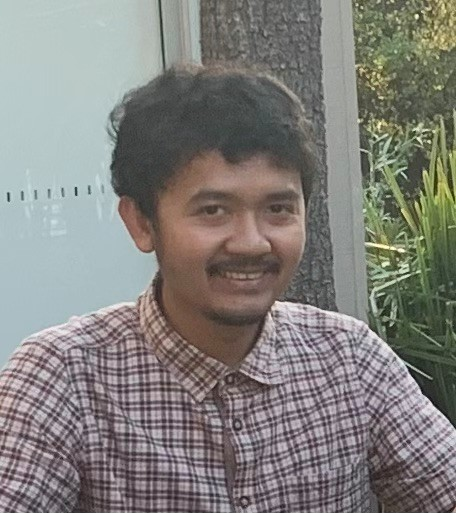
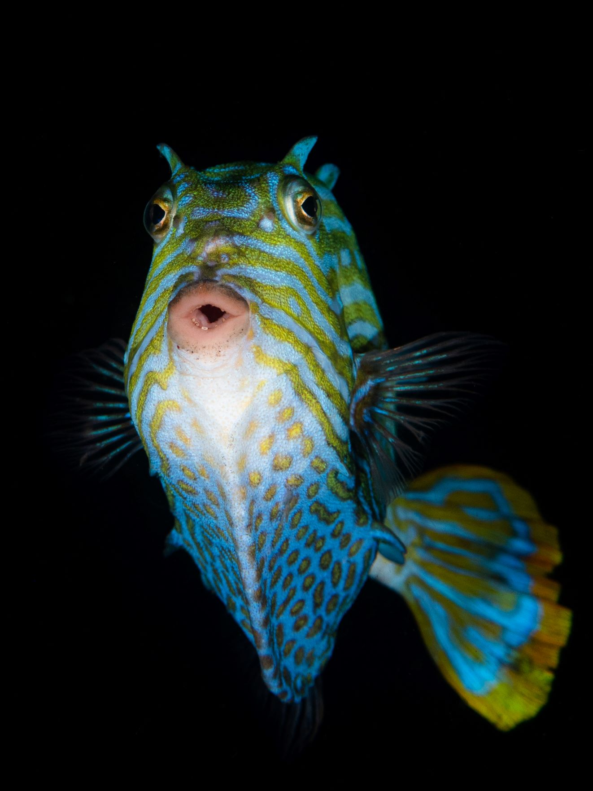

Our Team

Amy Coghlan
Research associate
I am interested in trophic dynamics and how body size, predator-prey interactions and environment affect marine community structure.

Asta Audzijonyte
Lead investigator
My goal is to understand and document human impacts on fish size diversity and find solutions to restore fish populations with lots of big fish.

Carolina Chong-Montenegro
Collaborator, Trinity College Dublin
My research focuses on the use of archival sources and statistical modelling to reconstruct historical catch trends and evaluate the long-term effects of fishing on fish populations.

Freddie Heather
Research associate
Developing methods to quantify human impacts on marine systems, specifically how body size can be used as a very useful metric.

Matt Testoni
Communications
I am a diver, underwater photograher and a science communicator. I lead the development of the Big Fish card game and make videos to inspire restoration of big fish.

Nils Krueck
Senior lecturer
I study size frequency distributions in natural and fished populations, and use them to assess the status and management of data-poor fishery species.

Pia Bessell-Browne
Collaborator, CSIRO
My research focuses on development and application of fishery stock assessment techniques that account for the impacts of climate change.

Rowan Trebilco
Collaborator, CSIRO
I apply models to assess status, trends, risks and opportunities for marine social ecological systems and develop strategies for climate change adaptation.

Sarah Willington
PhD student
I am interested in studying fishing and climate change impacts in fish body sizes.

Shane Richards
Senior lecturer
Developing mathematical models of biological systems and confronting them with data using modern statistical approaches. Research interests include: terrestrial and aquatic community ecology, disease dynamics, life-history evolution, and conservation biology.

Wanwan Kurniawan
PhD student
I am interested in advancing size-based stock assessment methods and applying mathematical and statistical tools to solve problems in fisheries.

All the fish
The main reason
Although usually not directly involved in research, we are the reason this team exists. See you underwater.